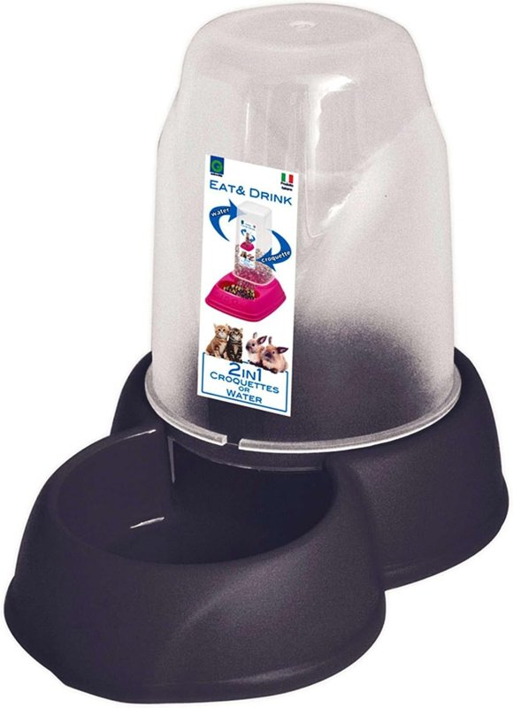
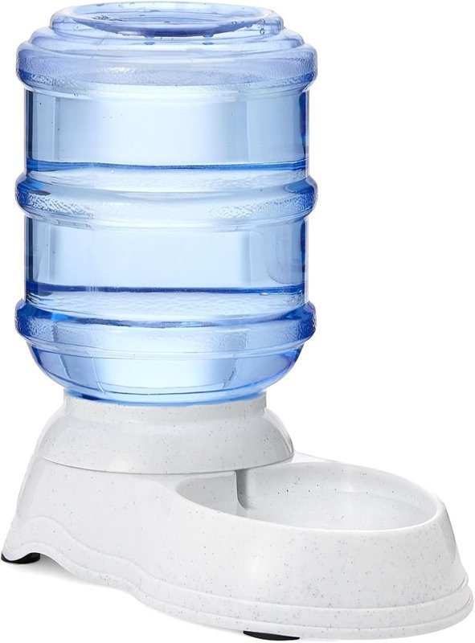

Fuentes de gravedad (bebederos) para gatos
Por el equipo de Casa y Comparativa · actualizado el 28 oct 2026
Aviso de afiliados: En calidad de Afiliado de Amazon, obtenemos ingresos por las compras adscritas que cumplen los requisitos aplicables. Si compras desde nuestros enlaces, no te cuesta más. Solo enlazamos ofertas vendidas por Amazon y con Prime.

- Un gato: tolva GP de 1,6 L (10,32 €).
- Varios gatos: Amazon Basics de 3,8 L (20,34 €).
- Los dos: de gravedad, sin enchufe ni cables.
Los que recomendamos (vendidos por Amazon, con Prime)
Sin enchufe ni cables: el agua baja sola al cuenco.

GP Tolva Antideslizante GP10089
- 1,6 L
- Base antideslizante
- Sirve como bebedero o comedero, según la ficha
- Medidas: sin dato (la ficha se contradice) · color aleatorio
- 4,0 sobre 5 con 799 opiniones

Amazon Basics Dispensador de agua 3,8 L
- 3,8 L, botella de boca ancha
- Pies de goma antideslizantes
- 31,5 × 17,8 × 30,5 cm
- 4,5 sobre 5 con 34.813 opiniones
Precios, medidas y valoraciones de las fichas de Amazon.es (28 oct 2026). Ninguno tenía el aviso de «devuelto con frecuencia».
Comparativa rápida
| Modelo | Para | Capacidad | Precio* | Medidas | Material | Nota (opiniones) |
|---|---|---|---|---|---|---|
| GP GP10089 | Un gato | 1,6 L | 10,32 € | sin dato | Plástico | 4,0 (799) |
| Amazon Basics 3,8 L | Varios gatos | 3,8 L | 20,34 € | 31,5 × 17,8 × 30,5 cm | PP, PET y goma | 4,5 (34.813) |
* Precio provisional en Amazon.es el 28 oct 2026; puede cambiar. En el móvil se ocultan algunas columnas.
Nuestra experiencia
Los gatos, como nosotros, necesitan agua fresquita siempre: para nosotros, es lo primero que cuidamos en casa. En nuestra familia usamos un bebedero de tolva de 1,5 litros: les da justo lo que necesitan para beber, y tienen agua fresca en todo momento.
Donde más se agradece es cuando sales de viaje. Antes dejábamos las llaves a un vecino para que les pusiera comida y agua y les limpiara el arenero. Ahora, con el comedero automático y el bebedero, nos vamos mucho más tranquilos. Pero nunca los dejamos solos: alguien pasa a verlos con regularidad (lo ideal, cada día) y les limpia el arenero.
- Lava bien los cuencos con agua y jabón, acláralos muy bien y deja que se sequen antes de volver a llenarlos.
- Cambia el agua a menudo.
Cómo elegir
Garantía: los dos tienen los 3 años de garantía legal al comprarlos a Amazon; garantía propia de cada marca: sin dato. Días de autonomía de cada modelo: sin dato.
Preguntas rápidas
¿Tolva o fuente eléctrica?
La tolva (de gravedad) no necesita enchufe ni filtros: el agua baja sola al cuenco. La fuente eléctrica mueve el agua con una bomba y necesita corriente. En esta página solo recomendamos de gravedad.
¿Cada cuánto lavarlo?
A menudo, igual que los cuencos de la comida: agua y jabón, aclarar muy bien y dejar secar antes de rellenar. Las dos fichas indican lavado a mano.
¿Sirve para perro?
Según sus fichas, sí: la GP indica perro y sirve también como comedero, y la Amazon Basics es para «una o varias mascotas». Para un perro grande, mejor más capacidad.
Más en «El rincón de tu mascota»
Fuentes y fechas
- Precios, vendedor (Amazon), valoraciones y medidas: fichas de Amazon.es consultadas el 28 oct 2026, 14:01 (hora de Madrid; entrega en Madrid, precios con IVA):
GP GP10089 (B01LZ22PHK); Amazon Basics 3,8 L (B07227RQJ9). - Prime: comprobado el 28 oct 2026 entre las 18:45 y las 19:15 (hora de Madrid), con entrega en Madrid; los dos lo tienen.
- Pruebas de laboratorio independientes: sin dato.
Aviso de afiliados: En calidad de Afiliado de Amazon, obtenemos ingresos por las compras adscritas que cumplen los requisitos aplicables. Precios y disponibilidad cambian: revisa la ficha de Amazon antes de comprar.